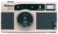

器材库 > 胶片袖珍相机（PS） > 35Ti

规格总览
发布日期
1993-12
产品类型
35mm自动对焦镜间快门相机
使用胶卷/胶片
35mm胶卷
画幅
24×36mm；全景模式：13×36mm
停产
是
镜头及对焦
镜头
35/2.8
镜头结构
6片/4组
光圈范围
f/2.8-f/22
对焦范围
0.4m至无限远
AF系统
主动式红外自动对焦系统，883级对焦
曝光控制
测光系统
3D矩阵测光系统（6区域）
曝光补偿
±2EV以1/3EV级调整
快门速度
2 - 1/500秒，T门（最长10分钟）
过片系统
过片
自动，每拍摄完一张后自动过卷一张
倒片
可中途退卷
胶卷计数
显示在模拟式指针显示器和LCD面板
闪光灯
内置闪光灯
有
闪光指数
GN 9
闪光模式
自动闪光，防红眼式自动闪光，闪灯关闭，强制闪光
其它规格
自动日期
具备日期功能
电池
1枚3V锂电池（CR123A 或 DL123）
材质
钛合金外壳
颜色
银色
尺寸
118×66×36mm
重量
324g
feeshy2015-01-02 21:454.5 分
操作性 4.00功能性 4.00美观性 5.00趣味性 5.00耐用性 5.00性价比 4.00
WoWiWi2014-05-19 22:244.83 分
操作性 5.00功能性 5.00美观性 5.00趣味性 5.00耐用性 4.00性价比 5.00
lihn2010-10-14 09:374.42 分
操作性 4.00功能性 4.50美观性 5.00趣味性 5.00耐用性 4.00性价比 4.00
changjiang2006-12-27 22:503.5 分
操作性 5.00功能性 4.50美观性 3.00趣味性 3.00耐用性 4.00性价比 1.50
woojia2006-06-23 18:594.42 分
操作性 4.50功能性 4.00美观性 4.50趣味性 4.50耐用性 4.00性价比 5.00
ultra3202006-03-31 23:074.42 分
操作性 4.00功能性 4.50美观性 5.00趣味性 5.00耐用性 4.50性价比 3.50
掌门师叔2005-11-20 16:554.42 分
操作性 4.00功能性 5.00美观性 5.00趣味性 5.00耐用性 3.50性价比 4.00
yushenw2005-03-05 22:584.42 分
操作性 4.50功能性 4.50美观性 4.50趣味性 5.00耐用性 4.00性价比 4.00
叮咚2005-02-14 17:284.58 分
操作性 5.00功能性 5.00美观性 5.00趣味性 5.00耐用性 4.00性价比 3.50
叮咚2005-02-08 19:14
kkg2005-01-17 19:54
产品图 / 样片
尼康 35Ti
评测 / 相关文章
该产品暂无存档的评测文章